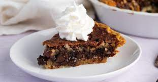

Kentucky Derby Pie

Description
Favorite dessert? Kentucky Derby Pie. Favorite Thanksgiving dish? Kentucky Derby Pie. I have found nothing else that compares to the taste sensation brought about by the combination of chocolate, bourbon, pecans, and brown sugar in this most glorious of pies. This recipe ain't the one my mom makes. But its close enough.
Ingredients
- 1 premade pie crust
- 1 1/2 cups chopped pecans
- 1 cup miniature semisweet chocolate chips
- 1 cup light corn syrup
- 1/2 cup granulated sugar
- 1/2 cup packed light brown sugar
- 4 large eggs, lightly beaten
- 1/4 cup unsalted butter, melted
- 2 Tbsp. all-purpose flour
- 2 Tbsp. bourbon
- 2 tsp. vanilla extract
- 1/2 tsp. salt
- Whipped cream
Steps
- Preheat oven to 325 degrees.
- Sprinkle pecans and chocolate chips evenly over piecrust.
- Whisk together corn syrup, granulated sugar, and brown sugar in a saucepan. Bring to a boil over medium-high heat; boil, whisking occasionally, until sugars are dissolved, about 5 minutes.
- Whisk together eggs, butter, flour, bourbon, vanilla, and salt in a large heatproof bowl.
- Slowly pour 1/3 cup of the hot sugar mixture into egg mixture, whisking constantly until fully incorporated.
- Whisk in remaining sugar mixture until smooth. Pour filling over pecan mixture in piecrust.
- Bake in preheated oven until pie edges are set and begin to puff up, 45 to 50 minutes. Transfer to wire rack; let cool completely to room temperature, about 2 hours.
- When ready to serve, slice and eat by itself or garnish with whipped cream.
Home